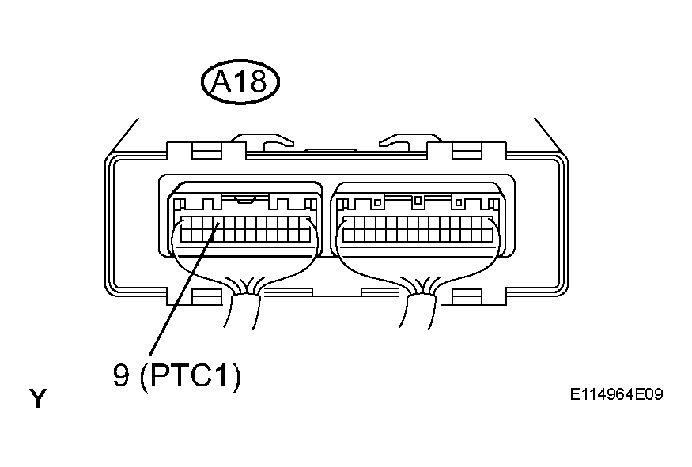
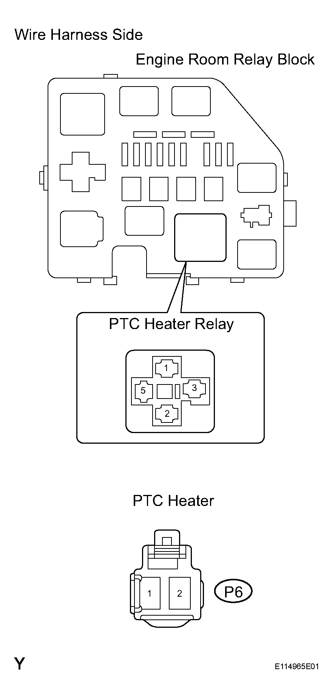
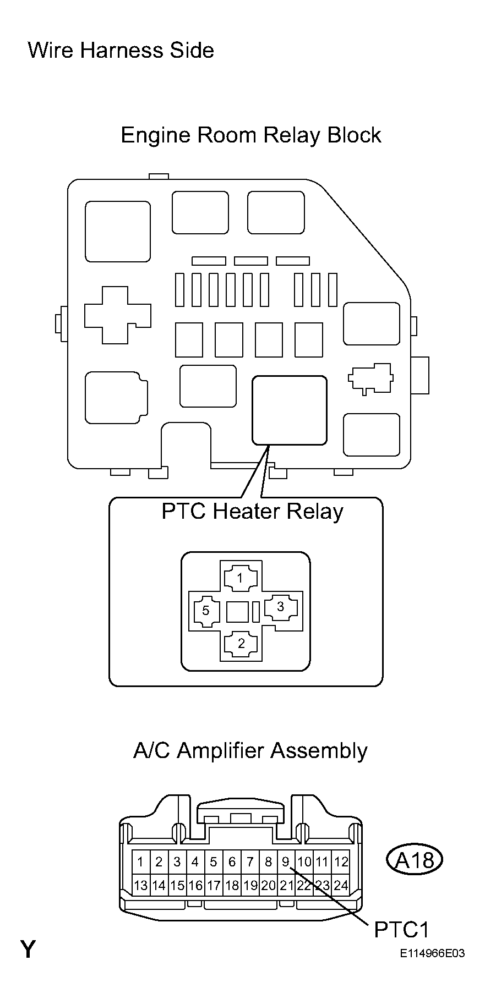

Inspection Procedure
- INSPECT FUSE (HTR SUB1)
- Remove the HTR SUB1 H-fuse from the engine room relay block.
- Measure the resistance of the fuse.
Standard resistance:
Below 1 Ω
NG: REPLACE FUSE
OK : Go to Next Step
- INSPECT PTC HEATER RELAY (Marking: HTR SUB1)
- Remove the PTC heater relay from the engine room relay block.
- Measure the resistance of the relay.
Standard resistance
TESTER CONNECTION AND SPECIFIED CONDITION CHARTTester Connection Specified Condition 3 - 5 10 kΩ or higher 3 - 5 Below 1 Ω (when battery voltage is applied to terminals 1 and 2)
NG: REPLACE PTC HEATER RELAY
OK : Go to Next Step
- CHECK AIR CONDITIONING AMPLIFIER ASSEMBLY (PTC1 VOLTAGE)
- Remove the A/C amplifier assembly but do not disconnect its connector.
- Turn the ignition switch ON.
- While the PTC operating conditions are met (engine rpm is at idle rpm or more, engine coolant temperature is 70°C (158°F) or less, air mix control knob setting is MAX HOT), turn the blower switch to the Lo setting.
- Measure the voltage of the connector.
Standard voltage

Courtesy of © TOYOTA, LICENSE AGREEMENT TMS1002TESTER CONNECTION AND SPECIFIED CONDITION CHARTTester Connection Specified Condition A18-9 (PTC1) - Body ground 10 to 14 V
NG: Go to step 6
OK : Go to Next Step
- CHECK WIRE HARNESS (PTC HEATER RELAY - PTC HEATER AND BATTERY)
- Remove the PTC heaterUB1 relay from the engine room relay block.
- Disconnect the P6 heater connector.
- Measure the voltage of the wire harness side connector.
Standard voltage

Courtesy of © TOYOTA, LICENSE AGREEMENT TMS1002TESTER CONNECTION AND SPECIFIED CONDITION CHARTTester Connection Specified Condition PTC heater relay terminal 5- Body ground 10 to 14 V - Measure the resistance of the wire harness side connector.
Standard resistance
TESTER CONNECTION AND SPECIFIED CONDITION CHARTTester Connection Specified Condition PTC heater relay terminal 3- P6-1 Below 1 Ω
NG: REPAIR OR REPLACE HARNESS AND CONNECTOR
OK : Go to Next Step
- CHECK PTC HEATER
- After replacing the PTC heater with a normal one, check that the PTC heater function operates normally.
OK:
PTC heater function operates normally.
NG: PROCEED TO NEXT CIRCUIT INSPECTION SHOWN IN PROBLEM SYMPTOMS TABLE
OK : Go to Next Step
REPLACE HEATER RADIATOR UNIT SUB-ASSEMBLY
- After replacing the PTC heater with a normal one, check that the PTC heater function operates normally.
- CHECK WIRE HARNESS (PTC HEATER RELAY - AMPLIFIER AND BODY GROUND)
- Remove the PTC heater relay from the engine room relay block.
- Disconnect the A18 amplifier connector.
- Measure the resistance of the wire harness side connectors.
Standard resistance

Courtesy of © TOYOTA, LICENSE AGREEMENT TMS1002TESTER CONNECTION AND SPECIFIED CONDITION CHARTTester Connection Specified Condition PTC heater relay terminal 2 - A18-9 (PTC1) Below 1 Ω PTC heater relay terminal 1 - Body ground Below 1 Ω
NG: REPAIR OR REPLACE HARNESS AND CONNECTOR
OK : Go to Next Step
- CHECK AIR CONDITIONING AMPLIFIER ASSEMBLY
- After replacing the A/C amplifier assembly with a normal one, check that the PTC heater function operates normally.
OK:
PTC heater function operates normally.
NG: PROCEED TO NEXT CIRCUIT INSPECTION SHOWN IN PROBLEM SYMPTOMS TABLE
OK : Go to Next Step
REPLACE AIR CONDITIONING AMPLIFIER ASSEMBLY
- After replacing the A/C amplifier assembly with a normal one, check that the PTC heater function operates normally.